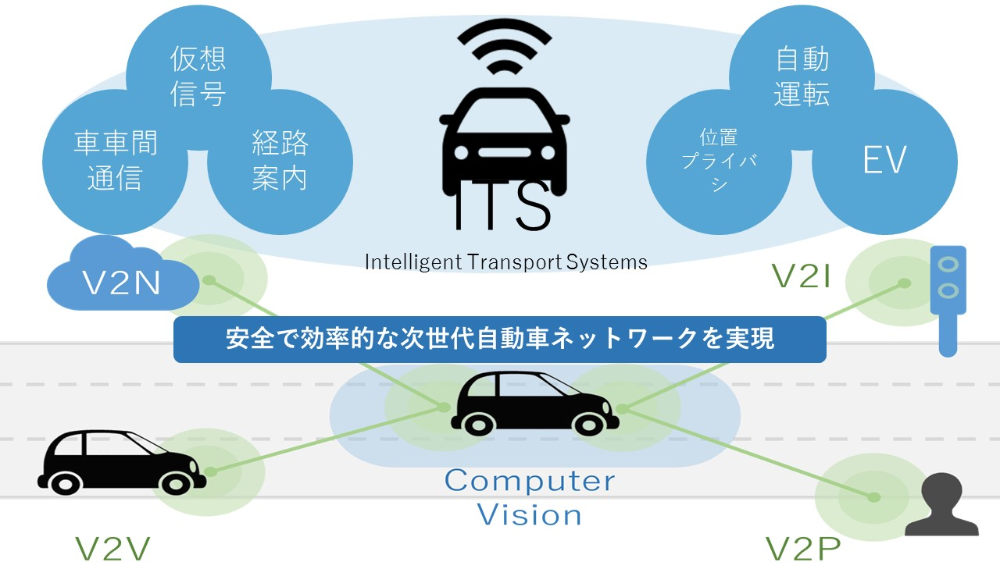

ITS班とは？
ITS班イメージ
研究紹介
以下のページで最近の研究について紹介していますITS班研究紹介（2021）
ITS班メンバー（2022年度版）
ITSは情報工学の"魅力"と"威力"が詰まった研究テーマです。シミュレーションの中で移動体（車、ドローン、等）が動き，見ていて楽しいです（魅力）。また，ITSに関わりのある自動運転を例に挙げれば，情報を用いて移動体をどう動かすか（モビリティ），必要な情報は何か（情報処理），情報をどう共有するか（通信），と少なくとも３つの研究分野が必要です（威力）。 実際に動いている移動体を見ながら研究したい、様々な情報通信技術に触れたい、どちらか１つでも当てはまる人はITS研究に向いていると個人的には思います。研究環境も後輩へのサポートも充実しています，普通免許は要りません、ぜひ一緒に研究しましょう！
自動車と歩行者間での通信についての研究を行っています．研究室の雰囲気は良く，分からないことがあっても，先生や先輩方が親切に教えてくだったり，相談に乗ってくださるので，研究を行いやすい環境です．
自動運転車の協調走行について研究しています．自動運転はこれから実用化が進んでいく新しい技術のため課題も多く研究のしがいがあります．特にモビリティの研究は車の動きが視覚的に見えるので楽しいです．
無人航空機の充電を考慮した配送スケジューリングについて研究を行っています．毎週ディスカッションがあるため，計画的に研究をすすめる事ができます．また先輩と会話する機会も多いため，わからないことが気軽に聞ける環境です．特に車やドローンなどに興味がある人にオススメです！
自動車通信における輻輳制御について研究しています．毎週のディスカッションに加えて，先輩方がいつでも相談に乗ってくださるため，とても充実した環境で研究を行うことができています．研究室の雰囲気もとてもいいです！
車両間通信に関する研究を行なっています．僕はまだ始めたばかりなのでわからないことだらけですが，どんな些細なことでも先輩方が親身になって教えてくださるので，とても研究しやすい研究室だと思います．